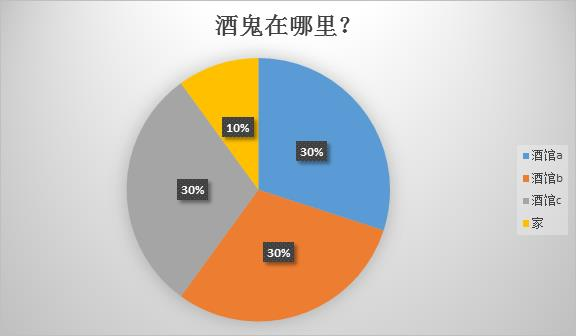

DrunkardProblem
酒鬼问题，频率派概率与贝叶斯
Dota2贴吧莫名奇妙开展了一场数学大讨论，源于这道题：
1 | 已知某酒鬼有90%的日子都会出去喝酒，喝酒只去固定三家酒吧（注：三家酒吧去的频率一样），今天警察找了其中两家 |
问题被抛出之后，贴吧围观群众越来越多，在一番激烈的唇枪舌剑之后，吧友的结果基本分成了两种：90%与75%。
90%党的思路是：题目给定酒鬼90%的概率回出去喝酒，而警察检查了前两家，没有发现酒鬼。则只要酒鬼出去喝酒，必定在第三家。酒鬼出去喝酒的概率为90%，故在第三家酒馆的概率为90%。
75%党使用贝叶斯公式一本正经的推算，得出结论：75%。
当然，最后进过多方认证，正确答案敲定为75%。
有个最直观的思路：
